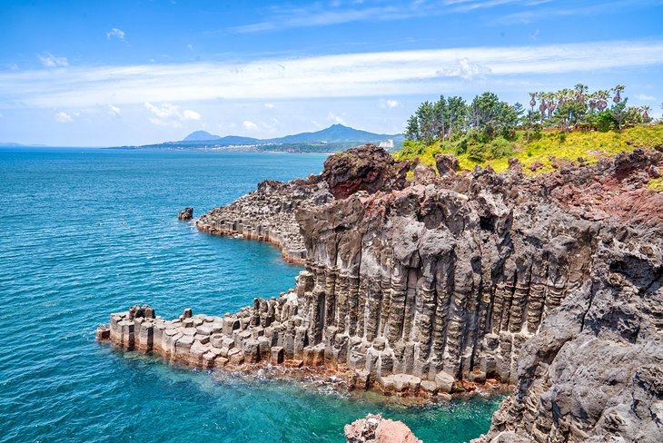

Country of South Korea
National Museum of Korea
As a world capital, Seoul is filled with a lot of museums. The largest is the National Museum of Korea, and like the Met in New York, it's a place that really can't be explored in a single visit. The vast collection combines art, history, and archeology, presented to show the history of Korean culture and tell the story of the Korean people.
It's also an excellent attraction to see if you only have limited time in Seoul. The collection is beyond vast, as it goes back over a million years. It's fascinating, especially for families and kids as there's such a wide range of objects. Everything from Stone Age tools to modern artwork by Korean artists.

Seoul Tower
Yes, everyone visiting Seoul should go up in the city's iconic observation tower. Its position almost on top of a mountain, plus the height of the tower itself, gets you almost 500 meters above sea level and the city below.
But, leave some time to explore the surrounding mountain area. The tower is near the top of Mount Namsan, and the entire area is Namsan Park, which is run by the city. There are miles of hiking trails to explore, all within a few minutes of downtown Seoul.
The top levels of the N Seoul Tower include indoor and outdoor observation areas and restaurants. The exterior of the tower is covered in LED lighting, which is illuminated each night in seasonal light shows.
There's a cable car that takes you from the city (near Myeongdong) to the tower's base area. You can then hike from here. After climbing the mountain and riding on the cable car, leave time to explore the Namsan Hanok Village. These preserved historic villages, which are located all over Seoul and Korea, are re-creations of ancient Korean neighborhoods. This village includes five restored hanoks or traditional Korean homes.
Jeju Island
A very popular resort destination (think the Hawaii of Korea), this volcanic island is best reached via a quick hour-long domestic flight from Seoul. The island boasts beautiful beaches along with a lot of culture and history.
The highest mountain in South Korea (a dormant volcano called Hallasan) is here along with miles of giant lava tubes. The lava tubes, which can be explored, are natural air pockets in the hardened lava, the size of railway tunnels.
Be sure to visit Jungmun Beach to see the diving women. These are women who free dive hundreds of feet to catch different types of seafood. This tradition started centuries ago, when the local men were all out on fishing boats. The island also has hundreds of miles of hiking trails and a lot of hot springs and health spas.